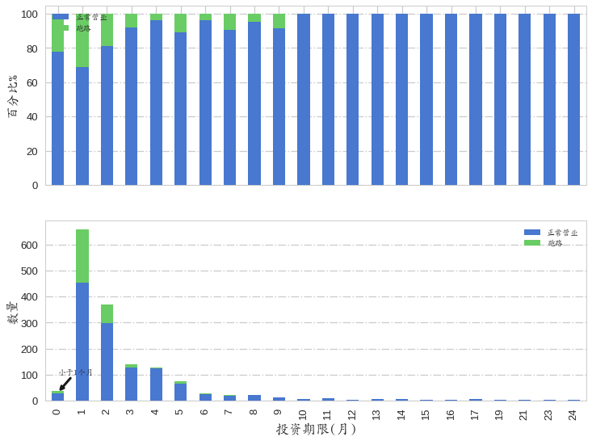

p2p跑路分类预测分析
背景说明
近几年，p2p网贷行业发展的是若火如荼，而整个行业的快速发展却掩盖不了其发展的不规范性。P2P网贷最大的优越性是使传统银行难以覆盖的借款人在虚拟世界里能充分享受贷款的高效与便捷。但与此同时，整个行业也是泥沙俱下，良莠不齐。一方面P2P行业仍然呈现高速增长态势，另一方面则是平台提现困难、倒闭、坏账风波不断，出现了所谓的p2p跑路现象。 本文从普通投资者的角度探讨p2p网贷平台跑路的缘由，分析网贷平台的各种指标与平台经营状态的关联，对p2p网贷平台是否会“跑路”进行预测。
本报告的所有数据来源于xx之家的档案，数据截止日期为2016年11月3日。以xx之家档案中的3895家p2p网贷平台为源数据，选择了网贷平台的几个评估指标如，平均收益率、资金托管、网友评分、平台资质、投资期限、注册地等为样本的特征，以网贷平台的经营状况（是正常营业状态还是跑路等非正常营业状态）为分类标签，尝试利用机器学习的决策树分类算法评估和预测p2p网贷平台的跑路现象。
数据采集及清洗
采用python的urllib2和beautifulsoup进行数据的采集和解析，采用python第三方库pandas, numpy对数据进行清洗处理，数据采集和简单的处理过程在此略过。
探索性分析
import pandas as pd
import numpy as np
import matplotlib.pyplot as plt
import seaborn as sns
sns.set(style="whitegrid", palette="muted", font_scale=1.0, color_codes=True, context="talk")
%matplotlib inline
import sys
from matplotlib.ticker import MultipleLocator, FormatStrFormatter
from matplotlib.font_manager import FontProperties
font = FontProperties(fname=r"/usr/share/fonts/truetype/arphic/ukai.ttc")
reload(sys)
sys.setdefaultencoding('utf-8')
# 载入清洗后的数据集，进行相应处理
dall = pd.read_table("./p2pchanged.txt", sep=',') # (3895, 12)
# 各特征分别为：
feature_dict = {"name": u"p2p平台名", "averageI": u"平均年化利率",
"date": u"上线日期", "zhuzed": u"注册地",
"touziq": u"投资期限", "netF": u"网友评分",
"background": u"公司类型", "tuoguan": u"资金托管",
"zhuz": u"注册资本", "shiz": u"实缴资本",
"datetime": u"上线时间", "classification": u"分类标签"
}
# 数据集前5行
dall.head()
| name | averageI | date | zhuzed | classification | touziq | netF | background | tuoguan | zhuz | shiz | datetime | |
|---|---|---|---|---|---|---|---|---|---|---|---|---|
| 0 | 108贷 | 14.548392 | 2015-02-26 | 44.0 | 0.0 | 2.578413 | 14.351883 | 0 | 0 | 500 | 0 | 5.326389e+07 |
| 1 | 2025金融 | 14.548392 | 2015-11-16 | 11.0 | 0.0 | 2.578413 | 14.351883 | 0 | 0 | 2000 | 0 | 3.054069e+07 |
| 2 | 51帮你 | 12.460000 | 2012-08-15 | 33.0 | 1.0 | 1.172000 | 16.500000 | 0 | 1 | 3000 | 2000 | 1.331839e+08 |
| 3 | 53财服 | 14.548392 | 2016-04-18 | 33.0 | 1.0 | 1.100000 | 14.351883 | 0 | 0 | 10000 | 20 | 1.723509e+07 |
| 4 | 51钱管家 | 12.000000 | 2015-11-04 | 50.0 | 1.0 | 2.578413 | 14.000000 | 0 | 1 | 10000 | 100 | 3.157749e+07 |
平均年化利率
dall["averageI"] = dall["averageI"].map(lambda x: np.round(x, 4))
dall.loc[:, "classification"] = dall["classification"].replace([0,1], [u'跑路',u'正常营业'])
df = dall.loc[dall["averageI"] != 14.5484, :]
plt.figure(figsize=(8,6))
fig = sns.distplot(df['averageI'],kde=True, vertical=False, color="green")
sns.despine(top=True)
plt.yticks(fig.get_yticks(), fig.get_yticks() * 100)
plt.ylabel('Distribution [%]', fontsize=16)
plt.xticks(range(0, 100, 10))
plt.gca().yaxis.grid(True, linestyle = ":")
plt.gca().xaxis.grid(True, linestyle = "-.")
plt.xlabel(u"平均年化利率 %", fontsize=16, fontproperties=font)
plt.title(u"平均年化利率的分布", fontsize=20, fontproperties=font)
<matplotlib.text.Text at 0x7fe3af9f8a10>

# 根据跑路与否进行分组得到了平均利率的分组对象
rate_cont = df.groupby(["classification"])["averageI"]
fig, ax1 = plt.subplots(figsize=(8,6))
rate_cont.plot(kind='kde',ax=ax1, style='--', linewidth=2.5)
rate_cont.plot(kind='hist',ax=ax1, normed=True, alpha=0.8,)
ax1.legend(loc='best', prop=font, fontsize=17)
ax1.set_ylabel('Frequency', fontsize=16)
ax1.set_xlim(-1, 95)
ax1.text(14.0, 0.115,s=u'正常营业平台平均收益率 12.88%', fontsize=12,va="bottom",ha="left",fontproperties=font,color='blue')
ax1.text(20.0, 0.09,s=u'跑路平台平均收益率 18.56%', fontsize=12,va="bottom",ha="left",fontproperties=font,color='green')
ax1.annotate('',xy=(12.18,0.109),xytext=(14,0.115),arrowprops=dict(arrowstyle="->",color='blue'))
ax1.annotate('',xy=(17.9,0.08),xytext=(20,0.09),arrowprops=dict(arrowstyle="->",color='green'))
plt.xlabel(u"平均年化利率 %", fontsize=16, fontproperties=font)
plt.title(u"p2p平台跑路与否与平均收益率", fontsize=20, fontproperties=font)
plt.yticks(ax1.get_yticks(), ax1.get_yticks() * 100)
plt.ylabel('Distribution [%]', fontsize=16)
plt.xticks(range(0, 100, 10))
plt.gca().yaxis.grid(True, linestyle = ":")
plt.gca().xaxis.grid(True, linestyle = "-.")
p2p网贷平台的平均年化收益率分布很广，从最低的4%到最高的90%均有，其中正常营业的p2p平台主要分布在5-20%, 而跑路平台主要分布在8-30%之间。正常营业的p2p平台的平均收益率为12.88%，跑路平台的平均收益率是18.56%。
地域分布
# 载入地区编号，共30个省
places = pd.read_table("./regis_place.txt", sep=',', header=None) # (30,2)
places.columns =["number_pro", "name_pro"]
df_set = set(df["zhuzed"].astype(np.int).values)
places_set = set(places["number_pro"])
places_set ^ df_set
{54, 63}
p1 = places.loc[places["number_pro"] != 54, :]
p_sub = p1.loc[p1["number_pro"] != 63, :]["name_pro"]
p_sub.shape
(29,)
# 根据注册地进行分组
pro_groupby = df.groupby("zhuzed")["averageI"].aggregate([np.size, np.mean]).reset_index()
pro_name = pro_groupby["zhuzed"].replace(pro_groupby["zhuzed"].values, p_sub)
pro_groupby["pro_name"] = pro_name.map(lambda x: x.strip())
pro_groupby.sort_values("size", ascending=False, inplace=True)
pro_groupby.head(3)
| zhuzed | size | mean | pro_name | |
|---|---|---|---|---|
| 18 | 44.0 | 479.0 | 14.446493 | 广东 |
| 0 | 11.0 | 335.0 | 11.644448 | 北京 |
| 8 | 31.0 | 246.0 | 12.214431 | 上海 |
fig, ax1 = plt.subplots(figsize=(10,7))
g = sns.barplot(y="size", x="pro_name", data=pro_groupby, palette="PuBu_d", ax=ax1)
plt.xticks(g.get_xticks(), fontproperties=font, fontsize=16, rotation=75)
# g=sns.factorplot(y="zhuzed", data=df, kind='count', size=6, color="indianred")
ax2 = ax1.twinx()
x_list = range(len(pro_groupby))
ax2.plot(x_list, pro_groupby["mean"], linewidth = 3, color="skyblue", marker="o", label=u"职位需求量")
ax2.set_ylabel(u"平均年化利率 %", fontsize=16, fontproperties=font)
ax1.set_ylabel(u"数量", fontsize=16, fontproperties=font)
ax2.set_ylim(4, 20)
ax2.yaxis.grid(True, linestyle = ":",)
ax1.yaxis.grid(False)
plt.title(u"全国各地区p2p网贷平台数量及平均年化利率", fontproperties=font, fontsize=20)
# 根据注册地和跑路与否的分类标签进行分组
pro_cla = df.groupby(["zhuzed", "classification"])["averageI"].aggregate([np.size, np.mean]).reset_index()
pro_name = pro_cla["zhuzed"].replace(pro_cla["zhuzed"].unique(), p_sub)
pro_cla["pro_name"] = pro_name.map(lambda x: x.strip())
for i in pro_cla["zhuzed"].unique():
total_ = pro_cla.loc[pro_cla["zhuzed"] == i, "size"].sum()
temp = pro_cla.loc[pro_cla["zhuzed"] == i, "size"] / total_ * 100
pro_cla.loc[pro_cla["zhuzed"] == i, "property"] = temp
pro_cla.loc[pro_cla["zhuzed"] == i, "total_num"] = total_
pro_cla.sort_values(["total_num", "classification"], ascending=False, inplace=True)
pro_cla.head(15)
| zhuzed | classification | size | mean | pro_name | property | total_num | |
|---|---|---|---|---|---|---|---|
| 37 | 44.0 | 跑路 | 149.0 | 17.667383 | 广东 | 31.106472 | 479.0 |
| 36 | 44.0 | 正常营业 | 330.0 | 12.992212 | 广东 | 68.893528 | 479.0 |
| 1 | 11.0 | 跑路 | 57.0 | 13.858772 | 北京 | 17.014925 | 335.0 |
| 0 | 11.0 | 正常营业 | 278.0 | 11.190432 | 北京 | 82.985075 | 335.0 |
| 17 | 31.0 | 跑路 | 54.0 | 16.403704 | 上海 | 21.951220 | 246.0 |
| 16 | 31.0 | 正常营业 | 192.0 | 11.036198 | 上海 | 78.048780 | 246.0 |
| 21 | 33.0 | 跑路 | 42.0 | 22.031429 | 浙江 | 23.204420 | 181.0 |
| 20 | 33.0 | 正常营业 | 139.0 | 13.863022 | 浙江 | 76.795580 | 181.0 |
| 29 | 37.0 | 跑路 | 92.0 | 21.970326 | 山东 | 57.142857 | 161.0 |
| 28 | 37.0 | 正常营业 | 69.0 | 15.144058 | 山东 | 42.857143 | 161.0 |
| 33 | 42.0 | 跑路 | 30.0 | 17.895000 | 湖北 | 31.578947 | 95.0 |
| 32 | 42.0 | 正常营业 | 65.0 | 13.785231 | 湖北 | 68.421053 | 95.0 |
| 23 | 34.0 | 跑路 | 27.0 | 18.066667 | 安徽 | 36.486486 | 74.0 |
| 22 | 34.0 | 正常营业 | 47.0 | 13.342553 | 安徽 | 63.513514 | 74.0 |
| 19 | 32.0 | 跑路 | 18.0 | 21.010556 | 江苏 | 25.714286 | 70.0 |
plt.figure(figsize=(7, 12))
g=sns.barplot(y="pro_name", x="size", data=pro_cla, hue="classification")
plt.yticks(g.get_yticks(), fontproperties=font, fontsize=16)
plt.ylabel("")
plt.xlabel(u"数量", fontsize=16, fontproperties=font)
plt.title(u"p2p网贷平台地区分布", fontproperties=font, fontsize=20)
plt.gca().xaxis.grid(True, linestyle = "-.",)
plt.legend(loc=7,prop=font, fontsize=12)
plt.annotate(u"山东地区p2p跑路比例最高达57%", xy = (80, 4), xytext = (100, 6), fontproperties=font, fontsize=15, arrowprops = dict(facecolor='purple'))
<matplotlib.text.Annotation at 0x7fe3a13a9110>
全国p2p平台的数量位居前三的省份（市）是广东、北京、上海，跑路平台比例最高的是山东，超过一半的p2p网贷平台出现跑路或其他非正常营业现象。
p2p网贷成立时间
# 将时间str转成datetime
df['date'] = pd.to_datetime(df['date'])
# 将转换好的时间series设置成行索引
dt = df.set_index("date")
dt["year_"] = dt.index.year
dt["month"] = dt.index.month
year_groupby = dt.groupby("year_")["averageI"].aggregate([np.size, np.mean, np.median])
year_groupby.drop(year_groupby.index[0], inplace=True)
year_groupby.reset_index(inplace=True)
month_groupby = dt.groupby("month")["averageI"].aggregate([np.size, np.mean, np.median])
month_groupby.drop(month_groupby.index[0], inplace=True)
month_groupby.reset_index(inplace=True)
month_groupby
| month | size | mean | median | |
|---|---|---|---|---|
| 0 | 2 | 97.0 | 13.900103 | 12.600 |
| 1 | 3 | 202.0 | 14.094703 | 13.295 |
| 2 | 4 | 191.0 | 13.716649 | 13.000 |
| 3 | 5 | 171.0 | 14.180819 | 12.790 |
| 4 | 6 | 180.0 | 14.210944 | 13.000 |
| 5 | 7 | 193.0 | 14.886114 | 13.500 |
| 6 | 8 | 186.0 | 15.527688 | 14.000 |
| 7 | 9 | 194.0 | 14.236392 | 13.195 |
| 8 | 10 | 171.0 | 15.033860 | 14.000 |
| 9 | 11 | 200.0 | 15.484450 | 14.300 |
| 10 | 12 | 239.0 | 13.877448 | 13.440 |
p2p_date_dict = {"year_": u"年份", "month": u"月份"}
def p2p_date_plot(dt, groupby_item):
data = dt.groupby(groupby_item)["averageI"].aggregate([np.size, np.mean, np.median])
data.drop(data.index[0], inplace=True)
data.reset_index(inplace=True)
fig, ax1 = plt.subplots(figsize=(8,6))
g = sns.barplot(y="size", x=groupby_item, data=data, palette="BuGn_d", ax=ax1)
plt.xticks(g.get_xticks(), fontproperties=font, fontsize=16, rotation=60)
ax2 = ax1.twinx()
x_list = range(len(data))
ax2.plot(x_list, data["mean"], linewidth = 3, color="darkgreen", marker="o", label=u"利率")
ax2.set_ylabel(u"平均年化利率 %", fontsize=16, fontproperties=font)
ax1.set_ylabel(u"数量", fontsize=16, fontproperties=font)
ax1.set_xlabel("")
ax2.yaxis.grid(True, linestyle = ":", linewidth=2, color="green", alpha=0.2)
ax1.yaxis.grid(False)
if groupby_item == "month":
ax2.set_ylim(10, 18)
# ax2.axhline(y=14.7,linewidth=2, xmin=0.5, xmax=0.8, color='r')
# 平行x轴的矩形，参数：ymin,ymax,xmin=0,xmin=1
ax2.axhspan(14.7, 15.7, 0.49, 0.6, facecolor="skyblue", alpha=0.8)
ax2.axhspan(14.7, 15.7, 0.74, 0.85, facecolor="skyblue", alpha=0.8)
plt.annotate("", xy = (8.1, 15.7), xytext = (7.5, 16.7), fontproperties=font, fontsize=15, arrowprops = dict(facecolor='skyblue'))
plt.annotate("", xy = (5, 15.7), xytext = (7, 16.7), fontproperties=font, fontsize=15, arrowprops = dict(facecolor='skyblue'))
plt.title(u"p2p网贷平台数量及平均年化利率与成立{}".format(p2p_date_dict.get(groupby_item)), fontproperties=font, fontsize=20)
plt.legend(loc="best",prop=font, fontsize=17)
for i in p2p_date_dict:
p2p_date_plot(dt, i)
统计数据显示我国最早的p2p网贷平台成立于2004年4月，截止到16年11月初，全国注册成立了近4000家p2p网贷平台。我国的p2p网贷行业在2013年进行高速发展期，到2014年底及2015年初到达顶峰，随后增速放慢。
从平均利率上看，2013年达到最大值，随后急剧降低;从利率与月份的关系可看出，7-8、10-11月份的平均利率高于其他月份，难道跟市场流动资金紧缺程度相关？
资金托管
fig, ax = plt.subplots(figsize=(8,6))
sns.barplot(x="tuoguan", y="averageI", hue="classification", hue_order=[u"跑路", u"正常营业"], data=df, palette="husl", ax=ax)
ax.set_xticklabels([u"无托管", u"托管"], fontproperties=font, fontsize=16)
ax2 = ax.twinx()
# 托管状况百分比
dft = df["tuoguan"].value_counts() / df.shape[0] * 100
ax2.plot([0,1], dft.values, linewidth = 1, color="b", marker="*", markersize=20, label=u"百分比%")
ax.set_ylabel(u"平均年化利率%", fontsize=16, fontproperties=font)
ax2.set_ylabel(u"百分比%", fontsize=16, fontproperties=font)
ax.yaxis.grid(True, linestyle = "-.",)
ax2.yaxis.grid(False)
ax.legend(loc=9,prop=font, fontsize=17)
ax2.legend(loc=1,prop=font, fontsize=17)
ax.set_xlabel("")
plt.title(u"p2p平台资金托管状况", fontproperties=font, fontsize=20)
<matplotlib.text.Text at 0x7fe397039310>
只有约45%的网贷平台进行了资金托管，进行资金托管的p2p网贷平台的平均利率低于未进行资金托管的平台，跑路或出现其他经营状况的平均利率均高于正常营业的平台。
网友评分
df["net_score"] = df["netF"].astype(np.int)
net_friend_score = df.groupby("classification")["net_score"].value_counts().unstack().unstack().unstack().fillna(0)
net_friend_score["total"] = net_friend_score.sum(axis=1)
net_friend_score_cum = net_friend_score.div(net_friend_score["total"], axis=0)*100
net_friend_score_cum.drop("total", axis=1, inplace=True)
net_friend_score.drop("total", axis=1, inplace=True)
fig1, (ax1, ax2) = plt.subplots(2,1, sharex=True, figsize=(12,9))
net_friend_score_cum.plot(kind='bar',ax=ax1, stacked=True, label="")
net_friend_score.plot(kind='bar',ax=ax2, stacked=True)
ax1.legend(loc=1, prop=font, fontsize=17)
ax2.legend(loc='best', prop=font, fontsize=17)
ax2.xaxis.grid(False)
ax2.yaxis.grid(True, linestyle="-.")
ax1.yaxis.grid(True, linestyle="-.")
ax2.set_ylabel(u"数量", fontsize=16, fontproperties=font)
ax1.set_ylabel(u"百分比%", fontsize=16, fontproperties=font)
ax2.annotate("5", xy = (1, 10), xytext = (2.5, 160), fontproperties=font, fontsize=15, arrowprops = dict(facecolor="m"))
ax1.annotate(u"总数为5", xy = (1, 76), xytext = (1.5,60), fontproperties=font, fontsize=15, arrowprops = dict(facecolor="m"))
plt.xlabel(u"网友评分", fontproperties=font, fontsize=17)
<matplotlib.text.Text at 0x7fe3912ed850>

网友评分栏包括四项，每项记5分，满分总共20分。在数据处理时将每一评分项目的无评分的或小于1.0分的统统记为1.0分，因此，最低分为4.0分，最高为20分。根据相对累计柱状图，网友评分较高的网贷平台出现跑路的比例较低。由于5分的平台数量只有5家，造成百分数偏离较大。
p2p网贷平台背景
background = df.groupby("classification")["background"].value_counts().unstack().unstack().unstack().fillna(0)
# [0,1,2,3],[u'私营&民营系',u'上市公司系',u'银行系',u'国资系']
background["total"] = background.sum(axis=1)
background_cum = background.div(background["total"], axis=0)*100
background_cum.drop("total", axis=1, inplace=True)
background.drop("total", axis=1, inplace=True)
fig1, (ax1, ax2) = plt.subplots(2,1, sharex=True, figsize=(12,9))
background_cum.plot(kind='bar',ax=ax1, stacked=True, label="")
background.plot(kind='bar',ax=ax2, stacked=True)
ax1.legend(loc=9, prop=font, fontsize=17)
ax2.legend(loc='best', prop=font, fontsize=17)
ax2.xaxis.grid(False)
ax2.yaxis.grid(True, linestyle="-.")
ax1.yaxis.grid(True, linestyle="-.")
ax2.set_ylabel(u"数量", fontsize=16, fontproperties=font)
ax1.set_ylabel(u"百分比%", fontsize=16, fontproperties=font)
ax2.set_xticklabels([u'私营&民营系',u'上市公司系',u'银行系',u'国资系'], rotation=30, fontproperties=font)
ax2.annotate(u'提现困难1家',xy=(3,150),xytext=(2.5,300),fontproperties=font,arrowprops=dict(arrowstyle="->",color='green',linewidth=3))
plt.xlabel(u"平台资质", fontproperties=font, fontsize=17)
<matplotlib.text.Text at 0x7f14b5933510>
p2p平台资质（平台背景）划分为民营&私营系、上市公司系、银行系、国资系，其中民营系网贷跑路比例最高，国资系有提现困难1家，上市公司和银行系无跑路。
投资期限
df.loc[:, "touziq"] = df["touziq"].map(lambda x: np.round(x, 4))
df_span = df.loc[df["touziq"] != 2.5784, :] # (1524, 12)
df_span.loc[:, "touziq"] = df_span["touziq"].map(lambda x: np.round(x))
df_span.loc[df_span["touziq"] == 0, "touziq"] = 0.5
df_span.loc[:, "touziq"] = df_span['touziq'].astype(np.int64)
plt.figure(figsize=(10,6))
g = sns.barplot(x="touziq", y="averageI", data=df_span, hue="classification")
plt.xticks(g.get_xticks(), fontproperties=font, fontsize=16)
plt.ylabel(u"平均年化利率%", fontsize=16, fontproperties=font)
plt.xlabel(u"投资期限(月)", fontsize=16, fontproperties=font)
plt.title(u"p2p平台平均年化利率与投资期限", fontproperties=font, fontsize=20)
plt.gca().yaxis.grid(True, linestyle = "-.",)
plt.legend(loc="best",prop=font, fontsize=17)
<matplotlib.legend.Legend at 0x7f14b2acf0d0>
span = df_span.groupby("classification")["touziq"].value_counts().unstack().unstack().unstack().fillna(0)
span["total"] = span.sum(axis=1)
span_cum = span.div(span["total"], axis=0)*100
span_cum.drop("total", axis=1, inplace=True)
span.drop("total", axis=1, inplace=True)
fig1, (ax1, ax2) = plt.subplots(2,1, sharex=True, figsize=(12,9))
span_cum.plot(kind='bar',ax=ax1, stacked=True, label="")
span.plot(kind='bar',ax=ax2, stacked=True)
ax1.legend(loc=2, prop=font, fontsize=17)
ax2.legend(loc='best', prop=font, fontsize=17)
ax2.xaxis.grid(False)
ax2.yaxis.grid(True, linestyle="-.")
ax1.yaxis.grid(True, linestyle="-.")
ax2.set_ylabel(u"数量", fontsize=16, fontproperties=font)
ax1.set_ylabel(u"百分比%", fontsize=16, fontproperties=font)
ax2.annotate(u'小于1个月',xy=(0,30),xytext=(0,100),fontproperties=font,arrowprops=dict(arrowstyle="->",color='k',linewidth=3))
plt.xlabel(u"投资期限(月)", fontproperties=font, fontsize=17)
<matplotlib.text.Text at 0x7f14b0e47550>

p2p网贷的投资期限变化范围很宽泛，少的短则几天，多的长达几年。为了方便，将秒标、天标等小于1个月的网贷平台记为小于1个月(0)，将大于等于24个月的平台记为24个月。大部分网贷平台的投资期限小于半年，尤其集中在1月、2月、3月标及天标上。而跑路的网贷平台也多集中在短期投资上。一年以上的投资期限的平台没有跑路现象。因此，在选择p2p平台时，要选择投资期限长的为宜。
p2p跑路原因分析及预测
通过前面的简单的探索分析我们对p2p网贷平台的几个样本特征与平台跑路的关系有了一定认识，下面尝试利用机器学习的决策树分类算法来分析和预测p2p网贷平台的跑路现象。
样本特征选择
采用相关系数矩阵和递归特征消除法(RFE)评估特征指标的重要性，进而选择合适的样品特征进行分类模型训练。
# 暂且不考虑p2p网贷平台名称和成立日期
data = dall.drop(["name", "date",], axis=1)
cols = data.columns.tolist()
data.head(3)
| averageI | zhuzed | classification | touziq | netF | background | tuoguan | zhuz | shiz | datetime | |
|---|---|---|---|---|---|---|---|---|---|---|
| 0 | 14.548392 | 44.0 | 0.0 | 2.578413 | 14.351883 | 0 | 0 | 500 | 0 | 5.326389e+07 |
| 1 | 14.548392 | 11.0 | 0.0 | 2.578413 | 14.351883 | 0 | 0 | 2000 | 0 | 3.054069e+07 |
| 2 | 12.460000 | 33.0 | 1.0 | 1.172000 | 16.500000 | 0 | 1 | 3000 | 2000 | 1.331839e+08 |
# corrcoef函数计算相关系数,更精确地是相关系数矩阵
cm = np.corrcoef(data[cols].values.T)
plt.figure(figsize=(10,8))
g = sns.heatmap(cm, cbar=True, annot=True,
square=True, fmt=".2f",
annot_kws={'size': 15},
yticklabels=cols,xticklabels=cols)
plt.yticks(g.get_yticks(), fontproperties=font, fontsize=16)
plt.xticks(g.get_xticks(), fontproperties=font, fontsize=16)
([<matplotlib.axis.XTick at 0x7f4cbaab8c50>,
<matplotlib.axis.XTick at 0x7f4cbab0e050>,
<matplotlib.axis.XTick at 0x7f4cba9db890>,
<matplotlib.axis.XTick at 0x7f4cba9dbdd0>,
<matplotlib.axis.XTick at 0x7f4cba9e3310>,
<matplotlib.axis.XTick at 0x7f4cba9e39d0>,
<matplotlib.axis.XTick at 0x7f4cba9ec110>,
<matplotlib.axis.XTick at 0x7f4cba9ec810>,
<matplotlib.axis.XTick at 0x7f4cba9ecc90>,
<matplotlib.axis.XTick at 0x7f4cba9f93d0>],
<a list of 10 Text xticklabel objects>)
从相关系数矩阵，投资期限和平均利率与分类标签（是否跑路）有较强的线性相关性，注册资本线性相关性最低，其他的特征有一定的线性相关性，但强度较弱。
from sklearn.model_selection import train_test_split
from sklearn.model_selection import cross_val_score
from sklearn.feature_selection import RFE
from sklearn.linear_model import RandomizedLasso
from sklearn.linear_model import RandomizedLogisticRegression
from sklearn.linear_model import LogisticRegression
from sklearn.ensemble import RandomForestClassifier
from sklearn.preprocessing import StandardScaler
from sklearn.metrics import accuracy_score
from sklearn.model_selection import learning_curve
from sklearn.metrics import classification_report
from sklearn.pipeline import Pipeline
from sklearn.model_selection import GridSearchCV
y = data.pop("classification")
X = data
features = X.columns.values
X_train, X_test, y_train, y_test = train_test_split(X, y, test_size=0.2, random_state=0)
sc = StandardScaler()
sc.fit(X_train) # 计算均值和方差
X_train_std = sc.transform(X_train) # 进行标准变换，变成标准正态分布
X_test_std = sc.transform(X_test)
"""
递归消除特征法使用一个基模型来进行多轮训练，每轮训练后，选出最好的的特征，
然后在剩余的特征上重复这个过程。整个过程中特征被消除的次序就是特征的排序。
RFE的稳定性很大程度上取决于在迭代的时候底层用哪种模型。参数estimator为基模型，
参数n_features_to_select为选择的特征个数。
"""
estimator = LogisticRegression()
selector = RFE(estimator, n_features_to_select=1, step=1)
selector = selector.fit(X_train_std, y_train)
bag = sorted(zip(features, selector.ranking_, selector.support_),
key=lambda x: x[1])
bag
[('background', 1, True),
('tuoguan', 2, False),
('shiz', 3, False),
('averageI', 4, False),
('netF', 5, False),
('zhuz', 6, False),
('touziq', 7, False),
('zhuzed', 8, False),
('datetime', 9, False)]
"""
稳定性选择是一种基于二次抽样和选择算法相结合的方法，选择算法可以是回归、SVM或其他
类似的方法。它的主要思想是在不同的数据子集和特征子集上运行特征选择算法，不断的重复，
最终汇总特征选择结果，比如可以统计某个特征被认为是重要特征的频率（被选为重要特征的
次数除以它所在的子集被测试的次数）。理想情况下，重要特征的得分会接近100%。稍微弱一点
的特征得分会是非0的数，而最无用的特征得分将会接近于0。
sklearn提供了随机lasso和随机逻辑回归。
"""
rlg = RandomizedLogisticRegression()
rlg.fit(X_train, y_train)
bag_rr = sorted(zip(features, rlg.scores_), key=lambda x: x[1], reverse=True)
bag_rr
[('averageI', 1.0),
('netF', 1.0),
('background', 1.0),
('tuoguan', 1.0),
('touziq', 0.56000000000000005),
('zhuzed', 0.53500000000000003),
('shiz', 0.40000000000000002),
('datetime', 0.23000000000000001),
('zhuz', 0.0)]
综合相关系数矩阵、递归消除特征法、稳定性选择的评估结果，平均利率、网友评分、平台背景、有无托管四个特征与p2p网贷平台的是否跑路线性相关性较大，我们先采用这四个特征进行分类模型构建。
分类模型构建
# 用sklearn的learning_curve得到training_score和cv_score，使用matplotlib画出learning curve
def plot_learning_curve(estimator, title, X, y, ylim=None, cv=5, n_jobs=1,
train_sizes=np.linspace(.05, 1., 20),
verbose=0, plot=True, text_=None):
"""
画出data在某模型上的learning curve.
参数解释
----------
estimator : 使用的分类器。
title : 图的标题。
X : 输入的feature，numpy类型
y : 输入的target vector
ylim : tuple格式的(ymin, ymax), 设定图像中纵坐标的最低点和最高点
cv : 做cross-validation的时候，数据分成的份数，其中一份作为cv集，其余n-1份作为training(默认为3份)
n_jobs : 并行的的任务数(默认1)
"""
train_sizes, train_scores, test_scores = learning_curve(
estimator, X, y, cv=cv, n_jobs=n_jobs, train_sizes=train_sizes, verbose=verbose)
train_scores_mean = np.mean(train_scores, axis=1) # train_scores是一个２０行５列的ndarry,20为从样本取的不同比例的样本数据作为X, 而５表示５次交叉验证
train_scores_std = np.std(train_scores, axis=1)
test_scores_mean = np.mean(test_scores, axis=1)
test_scores_std = np.std(test_scores, axis=1)
if plot:
plt.figure(figsize=(7,7))
plt.title(title)
if ylim is not None:
plt.ylim(*ylim)
plt.xlabel("samples")
plt.ylabel("scores")
# plt.gca().invert_yaxis() 例如y轴坐标3000-10000，调整为10000-3000来显示
plt.fill_between(train_sizes, train_scores_mean - train_scores_std, train_scores_mean + train_scores_std,
alpha=0.2, color="b")
plt.fill_between(train_sizes, test_scores_mean - test_scores_std, test_scores_mean + test_scores_std,
alpha=0.2, color="r")
plt.plot(train_sizes, train_scores_mean, '^-', color="blue", label="train score")
plt.plot(train_sizes, test_scores_mean, 'v-', color="red", label="cross_validation score")
plt.legend(loc="best")
plt.gca().yaxis.grid(True, linestyle = "-.")
plt.gca().xaxis.grid(True, linestyle = "-.")
plt.text(500, 0.754, text_, size = 12, color = "k", weight = "light", bbox = dict(facecolor = "purple", alpha = 0.3))
# plt.text(60, .025, r'$\mu=100,\ \sigma=15$')
plt.show()
LogisticReregession 分类模型构建
def evaluate_feature(df, feature_add, C_):
"""评估增加新的特征的分类准确率"""
raw_feature = ['averageI','classification','netF',
'background','tuoguan']
raw_feature.extend(feature_add) if type(feature_add) == list else raw_feature.append(feature_add)
data = df[raw_feature]
y = data.pop("classification")
X = data
for i in X.columns.tolist():
if i in ["background", "tuoguan", "zhuzed"]:
dummies_ = pd.get_dummies(X[i], prefix=i)
X_dummies = pd.concat([X, dummies_], axis=1)
X_dummies.drop([i], axis=1, inplace=True)
if "touziq" in X_dummies.columns.tolist():
X_dummies["touziq"] = X_dummies["touziq"].astype(np.int)
X_train, X_test, y_train, y_test = train_test_split(X_dummies, y, test_size=0.2, random_state=0)
lr = LogisticRegression(C=C_, penalty="l2", random_state=0, tol=1e-6)
lr.fit(X_train, y_train)
y_pred = lr.predict(X_test)
num_test = len(y_test)
result = (num_test - (y_test != y_pred).sum()) / float(num_test) * 100
feature_str = "add feature:" + ",".join(feature_add) if feature_add else ""
content = "{2} accuracy_score:{0} C:{1}".format(np.round(result, 4), C_, feature_str)
plot_learning_curve(lr, "learning curve", X_train, y_train, text_=content)
for i in [None, "touziq", "zhuzed"]:
add_feature = []
if i is not None:
add_feature.append(i)
evaluate_feature(dall, add_feature, 0.5)
for C in [0.01, 0.05, 0.1, 0.5, 1]:
evaluate_feature(dall, ["touziq", "zhuzed"], C)


当选择平均年化利率、网友评分、资金托管、平台资质四个特征，正则化系数为0.5候，LogisticRegression的分类准确率为76.5%，当增加投资期限的分类特征时候，准确率略有提高达到77.1%，当增加注册地的分类特征时候，准确率反而降低，这可能与处理注册地的哑变量没有进一步进行数量上的限制有关。在此，先选取平均年化利率、网友评分、资金托管、平台资质、注册地为分类特征。
随机森林分类模型构建
dall.head(2)
| name | averageI | date | zhuzed | classification | touziq | netF | background | tuoguan | zhuz | shiz | datetime | |
|---|---|---|---|---|---|---|---|---|---|---|---|---|
| 0 | 108贷 | 14.548392 | 2015-02-26 | 44.0 | 0.0 | 2.578413 | 14.351883 | 0 | 0 | 500 | 0 | 5.326389e+07 |
| 1 | 2025金融 | 14.548392 | 2015-11-16 | 11.0 | 0.0 | 2.578413 | 14.351883 | 0 | 0 | 2000 | 0 | 3.054069e+07 |
def randomforest_classifier(df):
feature = ['averageI','classification','netF',
'background','tuoguan','touziq']
data = df[feature]
y = data.pop("classification")
X = data
for i in X.columns.tolist():
if i in ["background", "tuoguan", "zhuzed"]:
dummies_ = pd.get_dummies(X[i], prefix=i)
X_dummies = pd.concat([X, dummies_], axis=1)
X_dummies.drop([i], axis=1, inplace=True)
if "touziq" in X_dummies.columns.tolist():
X_dummies["touziq"] = X_dummies["touziq"].astype(np.int)
X_train, X_test, y_train, y_test = train_test_split(X_dummies, y, test_size=0.2, random_state=0)
pipeline = Pipeline([('clf', RandomForestClassifier(criterion='gini'))])
parameters = {
'clf__n_estimators': (40, 80),
'clf__max_depth': (15, 20, 30),
'clf__min_samples_split': (10,20,50),
'clf__min_samples_leaf': (2,5,15),
'clf__max_features': (2,5)
}
grid_search = GridSearchCV(pipeline, parameters, n_jobs=2, verbose=1, scoring='accuracy')
grid_search.fit(X_train, y_train)
accuracy_score = "best_accuray_score: {}".format(grid_search.best_score_)
best_parameters = grid_search.best_estimator_.get_params()
parameters = sorted(parameters.keys())
#print "\t%s: %r" % (param_name, best_parameters[param_name])
predictions = grid_search.predict(X_test)
print '\t%s\t%s\t%s\t%s' % ('分类','精确率','召回率','f1-score')
evaluate_result = classification_report(y_test, predictions)
#print '0 ：p2p平台跑路(或出现其他非正常运营的问题)'
#print '1 ：正常运营'
return accuracy_score, best_parameters, evaluate_result
accuracy_score, best_params, evaluate_result = randomforest_classifier(dall)
accuracy_score
'best_accuray_score: 0.825738125802'
best_params
"""
{'clf': RandomForestClassifier(bootstrap=True, class_weight=None, criterion='gini',
max_depth=30, max_features=5, max_leaf_nodes=None,
min_impurity_split=1e-07, min_samples_leaf=2,
min_samples_split=50, min_weight_fraction_leaf=0.0,
n_estimators=80, n_jobs=1, oob_score=False, random_state=None,
verbose=0, warm_start=False),
"""
# 使用gridsearch的最佳参数进行randomforestclssification,分析learning curve
feature = ['averageI','classification','netF','background','tuoguan','touziq']
data = dall[feature]
y = data.pop("classification")
X = data
for i in X.columns.tolist():
if i in ["background", "tuoguan", "zhuzed"]:
dummies_ = pd.get_dummies(X[i], prefix=i)
X_dummies = pd.concat([X, dummies_], axis=1)
X_dummies.drop([i], axis=1, inplace=True)
if "touziq" in X_dummies.columns.tolist():
X_dummies["touziq"] = X_dummies["touziq"].astype(np.int)
X_train, X_test, y_train, y_test = train_test_split(X_dummies, y, test_size=0.2, random_state=0)
rsl = RandomForestClassifier(n_estimators=80, criterion='gini', max_depth=30, min_samples_split=50, min_samples_leaf=2,
max_features=5)
rsl.fit(X_train, y_train)
y_pred = rsl.predict(X_test)
num_test = len(y_test)
result = (num_test - (y_test != y_pred).sum()) / float(num_test) * 100
plot_learning_curve(rsl, "learning curve", X_train, y_train, text_=result)
result

80.616174582798465
RandomForestClassifier的训练集的最高分类准确率为82.5%，但从learning curve能看出存在着明显的过拟合现象，故测试集的准确率只有80.6%，略高于LogisticRegression的分类效果。
总结
通过LogistciRegression和RandomForestClassifier建立的分类模型的分类效果均较差。造成以上原因跟数据源有一定关系。有关p2p网贷平台的评估指标有很多，本报告只选择了5个特征给机器算法学习和训练，其他指标如网贷平台的工商注册信息、网站ICP、融资及风投信息等暂没考虑。此外，由于数据的缺失值较多，比如平均利率这一个指标，在分析的3895家p2p平台中有1695家无此项数据，这些都会影响到分类模型的分类及预测效果。
p2p平台跑路原因可简单地分为诈骗类和经营不善类。庞氏骗局、恶意自融等属于诈骗类。由于网贷平台经营过程的成本偏高，风控不过关而导致的经营不善，引起运营平台资金链断裂，最终关门跑路。一般而言，跑路平台有一些特点，如资产项目信息披露不明，风控不达标或根本无风控一环，秒标、天标、高息标比例高，投资者用户体验度差等。
本文首先对p2p网贷平台的特征与是否跑路的关系进行定性分析，随后尝试图通过sklearn提供的两种分类算法对p2p网贷平台的跑路现象进行分类预测，效果一般（准确率0.8），其原因在样本数据缺失较多及样本特征不全面。因此，要对网贷平台的跑路与否进行更精确的预测，就要更进一步地采取一些措施考察网贷平台，比如，对网贷平台的相关工商信息进行查询和确认，查询网贷平台是否接受过风投，可参考第三方网贷机构的评级数据，对平台进行实地考察等等。只有对网贷平台进行全面的考察和判断才能最大地降低网贷投资风险。